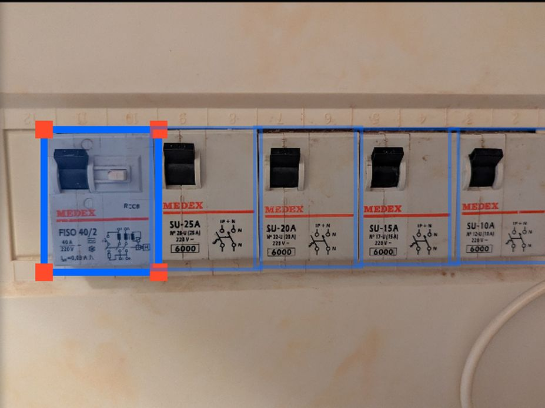

PanelSafe
Breaker-board auditing from a single photograph.
A YOLO detection pipeline trained on a proprietary field dataset and scaled tenfold by a synthetic generator that crops annotated breakers, masks their backgrounds, and re-pastes them onto rail geometry in new arrangements. Detections are then refined by a spatial heuristic layer and an HMM/Viterbi decoder that applies the physical grammar of a DIN rail.
The interesting part is what went wrong. The model scored 92% and was visibly wrong in the field, confidently calling residual-current devices MCBs. The cause was a six-class rotation between the annotation tool’s classes.txt and the data.yaml training actually read; the model had faithfully learned the permutation. Rescored against corrected labels, that 92% was roughly 6%. The metric had never measured accuracy. It measured agreement with a broken ground truth.
